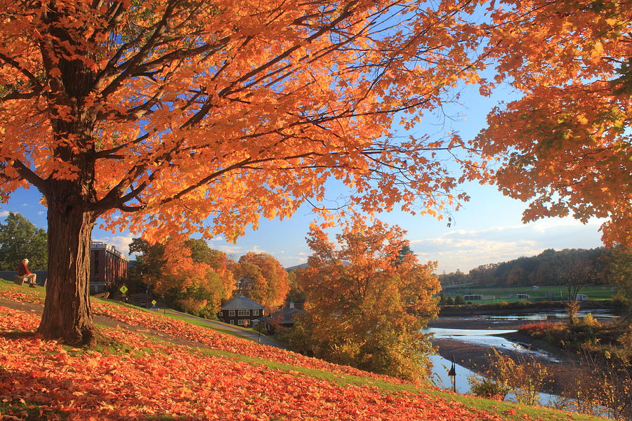

A women's college in Northampton, MA founded in 1871. It is a part of the five college consortium where students at neighboring colleges can attend courses at Smith and vise versa. The school has recently updated their school mascot to the Smith Bears..
Click here to explore Smith's webpage!These are just a few majors that Smith College offers.
There are various activities and shops located near Smith College. For instance Forbes library is near Smith campus and students may choose to study there and get a library card.
This list identifies some of the closest houses to Forbes library, starting with the closests.
During the fall, the pond near the quad area has some scenic views of the fall foliage at pond.
